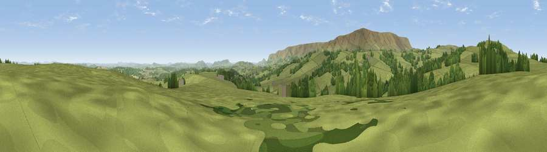

Viewpoint near Llanrosser
#14996 in England · top 47% of its area beats it · near LlanrosserThe view, rendered

A 360° render of this exact spot computed from the terrain model, tree cover and land cover — summer colours, afternoon light, calibrated against photographs of famous viewpoints. Real trees, hedges and buildings will differ in detail.
The panorama
Grey silhouette: terrain skyline in each direction (720 bearings, Earth curvature and refraction included). Dashed green: skyline with trees (+15 m) and buildings (+8 m) as obstacles. Blue strip: how far the ground is visible on each bearing.
Where the view opens
Wedge length = distance to the farthest visible ground on that bearing (vegetation-aware). Rings at 10, 25 and 50 km.
What fills the view
84% grassland · 14% woodland · 2% cropland
Angular shares of the visible panorama (visual magnitude), not map area. Landscape diversity 0.22 (0–1 Shannon).
Key numbers
More beautiful places nearby
The staircase of upgrades: each row has a higher view potential than everything closer. Driving times are estimates from straight-line distance, calibrated against real road routing — check an actual route before setting out.
| Place | Direction | Drive | Score |
|---|---|---|---|
| Viewpoint near Michaelchurch Escley | SE · 1 km | ~3 min | 59.8 |
| Black Hill | WSW · 4 km | ~9 min | 79.8 |
| Viewpoint near Craswall | W · 7 km | ~14 min | 81.5 |
| Garway Hill | SE · 17 km | ~30 min | 84.6 |
| Herefordshire Beacon | E · 45 km | ~65 min | 85.8 |
| Millennium Hill | E · 45 km | ~65 min | 86.9 |
| Worcestershire Beacon | E · 47 km | ~67 min | 87.1 |
| Viewpoint near West Quantoxhead | S · 96 km | ~121 min | 87.9 |
52.02643, -3.00744 · source: screening · position refined by local search. Computed location — check access rights before visiting.